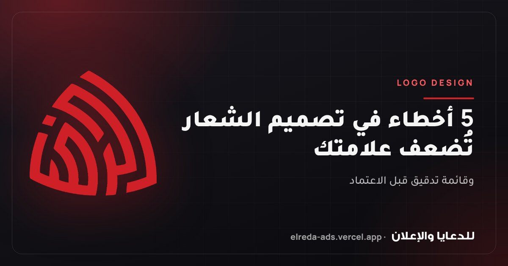

الخلاصة في 30 ثانية
- الشعار الجيد يُقرأ في كل الأحوال: صغيرًا على أيقونة، وكبيرًا على يافطة، وبلون واحد على ختم.
- أكثر 5 أخطاء تُضعف الشعار: التفاصيل الزائدة، والألوان الكثيرة، والخط صعب القراءة، والنسخة الواحدة، واستلام ملف JPG فقط.
- قبل اعتماد أي شعار اختبره على 24 بكسل، وبلون واحد، ومن مسافة 5 أمتار.
- لا تقبل التسليم بدون ملف Vector (AI أو SVG أو PDF) ونسخ للخلفيات الفاتحة والغامقة.
لماذا يُعتبر الشعار أهم قرار في هويتك البصرية؟
الشعار هو العنصر الوحيد الذي سيظهر في كل مكان تقريبًا: الكارت الشخصي، والفاتورة، وصورة البروفايل على إنستجرام، واليافطة، والعربية، والختم، والموقع. أي ضعف فيه يتكرر معك في كل هذه الأماكن لسنوات، وتغييره بعد الانتشار مكلف، لأنك ستعيد طباعة كل شيء وتعيد تعريف الناس بعلامتك.
الخبر الجيد أن أغلب مشاكل الشعارات متوقعة ويمكن اكتشافها قبل الاعتماد. هذه أكثر خمسة أخطاء نراها في الشعارات التي يرسلها لنا العملاء لإعادة تصميمها.
الخطأ الأول: شعار مليء بالتفاصيل
الشعار الذي يبدو رائعًا على شاشة كبيرة قد يتحول إلى بقعة غير مفهومة عندما يصغر. الظلال، والتدرجات الكثيرة، والخطوط الرفيعة، والرسومات الدقيقة كلها تختفي في صورة البروفايل على السوشيال ميديا أو في أيقونة المتصفح أو على قلم دعائي.
الخطأ الثاني: ألوان كثيرة
كل لون إضافي يعني تكلفة أعلى في بعض أنواع الطباعة (مثل السلك سكرين والتطريز)، وصعوبة أكبر في الحفاظ على تطابق الألوان بين المطبوعات والشاشات، وذاكرة أضعف عند العميل. العلامات التي يتذكرها الناس غالبًا مرتبطة بلون واحد أو اثنين.
الخطأ الثالث: خط صعب القراءة
الخطوط المزخرفة والمتداخلة قد تبدو مميزة، لكن لو قرأ الناس اسمك بشكل خاطئ أو لم يستطيعوا قراءته من بعيد على يافطة أو عربية، فقد خسر الإعلان وظيفته الأساسية. وهذا شائع جدًا في الخطوط العربية الزخرفية التي تتشابك فيها الحروف.
الخطأ الرابع: نسخة واحدة فقط من الشعار
هذا الخطأ الذي يقع فيه أغلب أصحاب المشاريع. الشعار سيوضع على خلفيات فاتحة وغامقة وصور ملونة، وأحيانًا سيُطبع بلون واحد على ختم أو فاتورة أو شنطة. النسخة الواحدة لا تصلح لكل هذه الحالات، فتجد الشعار مختفيًا على الخلفية الغامقة أو مشوّهًا عند تحويله للأبيض والأسود.
| النسخة | متى تستخدمها |
|---|---|
| الأساسية (بالألوان) | على الخلفيات الفاتحة، والموقع، ومعظم المطبوعات |
| المعكوسة (بيضاء) | على الخلفيات الغامقة والصور |
| أحادية اللون (أسود) | الأختام، والفواتير، والفاكس، والطباعة بلون واحد |
| الرمز وحده (بدون الاسم) | صورة البروفايل، وأيقونة الموقع، والأماكن الصغيرة |
| أفقية ورأسية | لتناسب الهيدر الطويل أو المساحات المربعة |
الخطأ الخامس: استلام ملف JPG وخلاص
ملفات JPG و PNG ملفات «نقطية» (Raster)، أي مكوّنة من نقاط بعدد محدد. عندما تكبّرها لطباعة رول أب أو يافطة، تظهر الحواف مكسّرة وضبابية. وكثير من أصحاب المشاريع يكتشفون هذه المشكلة بعد سنوات، عندما يحتاجون يافطة كبيرة ولا يجدون الملف الأصلي عند المصمم.
| الملف | الاستخدام |
|---|---|
| AI أو EPS | الملف الأصلي القابل للتعديل، للمصممين والمطابع |
| SVG | للمواقع والتطبيقات، ويُكبَّر بدون فقد جودة |
| PDF (Vector) | للإرسال للمطابع |
| PNG بخلفية شفافة | للعروض التقديمية والسوشيال ميديا والمستندات |
قائمة تدقيق قبل اعتماد شعارك
- واضح ومفهوم على 24 بكسل وعلى 1 سم مطبوعًا.
- يعمل بلون واحد (أسود فقط وأبيض فقط) بدون أن يفقد شكله.
- ثلاثة ألوان بالكثير، ولكل لون كود CMYK و HEX.
- الاسم مقروء من 5 أمتار.
- توجد نسخة للخلفيات الفاتحة وأخرى للغامقة، ورمز مستقل.
- لا يشبه شعار منافس معروف في نفس مجالك.
- استلمت ملفات Vector (AI أو SVG أو PDF) مع PNG شفاف.
- يوجد دليل استخدام بسيط: المسافة الآمنة حول الشعار، وأصغر مقاس، والاستخدامات الممنوعة.
أسئلة شائعة
هل أستطيع تصميم شعاري بنفسي أو بالذكاء الاصطناعي؟
أدوات الذكاء الاصطناعي مفيدة لتوليد أفكار أولية، لكن نتائجها غالبًا تكون صورًا نقطية (وليست Vector)، وقد تحتوي نصوصًا مشوّهة، وقد تشبه أعمالًا موجودة. استخدمها للإلهام، ثم اجعل مصممًا يحوّل الفكرة إلى شعار متجه نظيف بنسخ كاملة.
ما الفرق بين الشعار والهوية البصرية؟
الشعار جزء من الهوية. الهوية البصرية تشمل الشعار بكل نسخه، والألوان، والخطوط، وطريقة تصميم المطبوعات والسوشيال ميديا، بحيث يظهر كل ما يخص علامتك بشكل متناسق.
كم لونًا يجب أن يكون في الشعار؟
لون أو لونان أساسيان كافيان لأغلب العلامات، بالإضافة إلى لون محايد. كلما قلّت الألوان سهلت الطباعة وزاد تذكّر الناس للعلامة.
هل أحتاج تغيير شعاري القديم؟
ليس بالضرورة. أحيانًا يكفي «تحديث» الشعار بتبسيطه وتجهيز نسخ صحيحة منه دون تغيير شكله الذي يعرفه الناس. اختبره بقائمة التدقيق أعلاه، وقرّر بناءً على النتيجة.
ما الملفات التي يجب أن أستلمها من المصمم؟
ملف أصلي قابل للتعديل (AI أو EPS)، و SVG، و PDF متجه، و PNG بخلفية شفافة، لكل نسخة من الشعار (أساسية ومعكوسة وأحادية اللون والرمز وحده)، مع أكواد الألوان والخطوط المستخدمة.
عاوز شعار وهوية معمولة صح من أول مرة؟
نصمم شعارك بكل نسخه (أساسية ومعكوسة وأحادية اللون) وبملفات Vector جاهزة للطباعة والسوشيال والموقع، مع دليل استخدام بسيط.